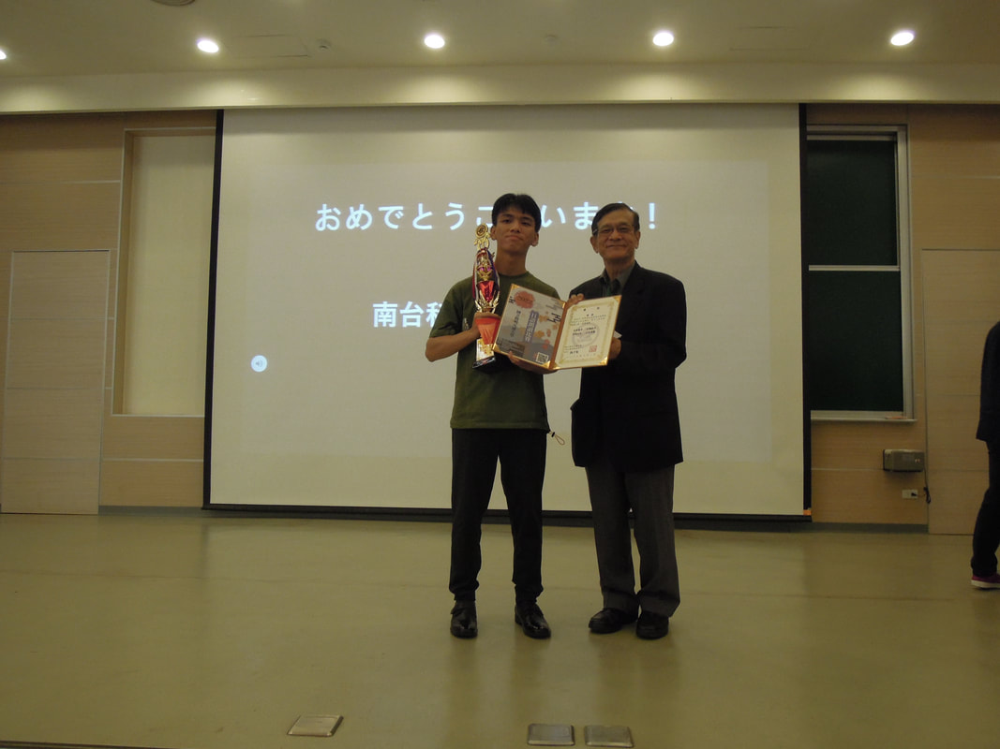
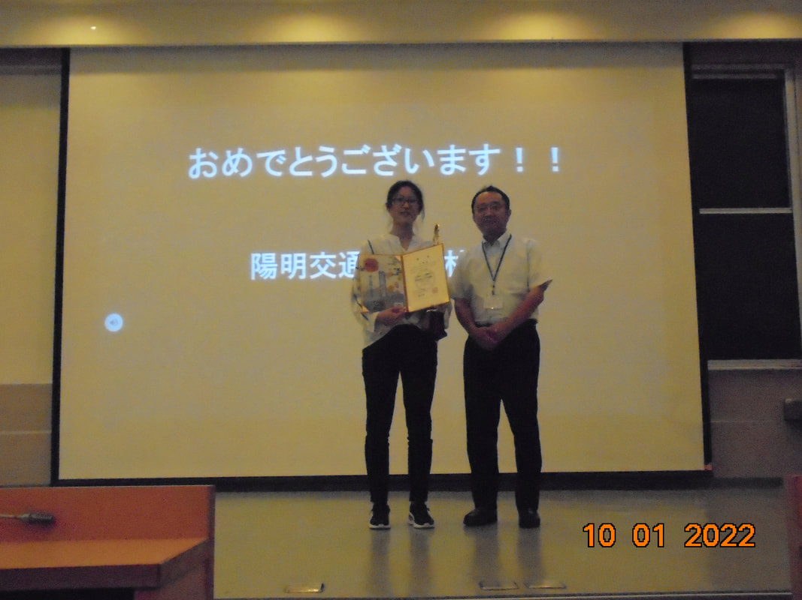
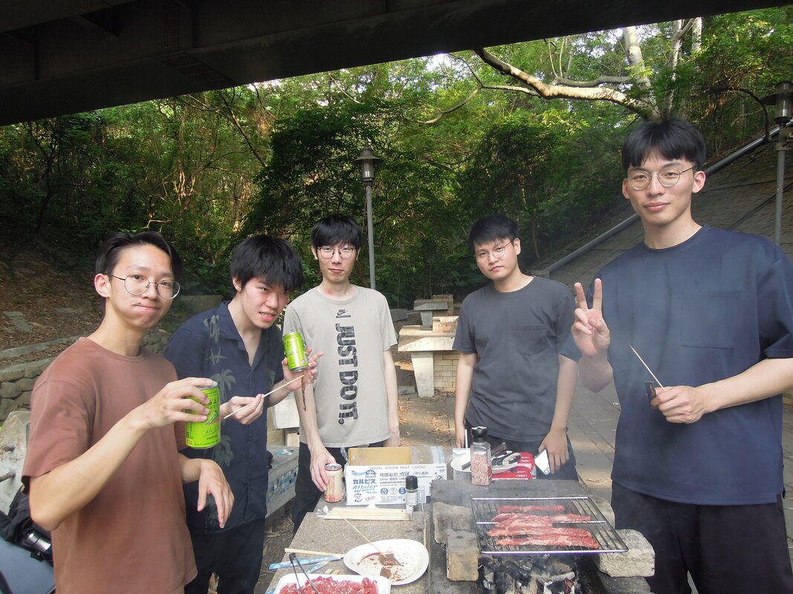
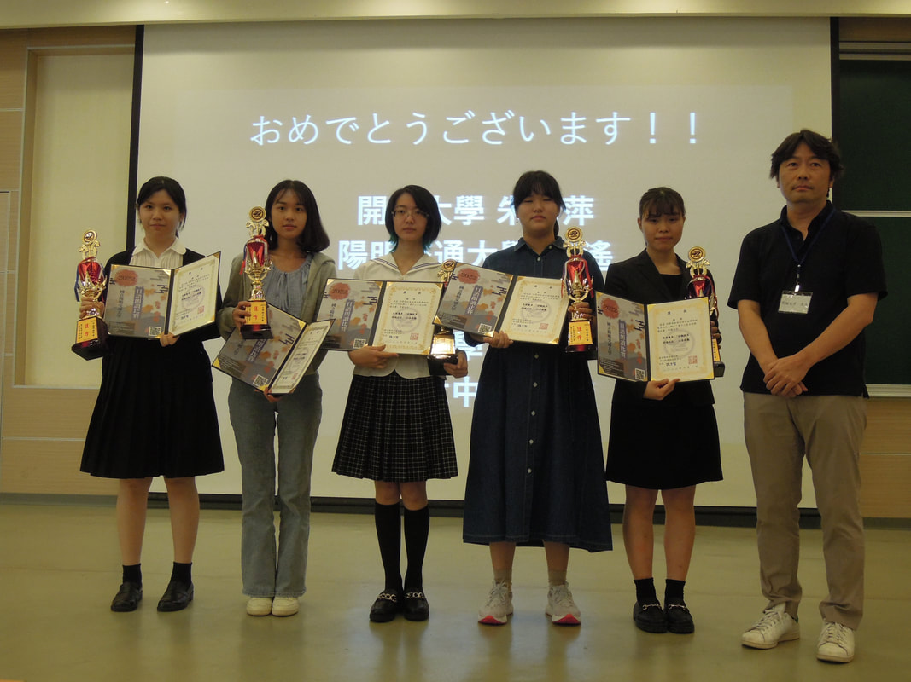
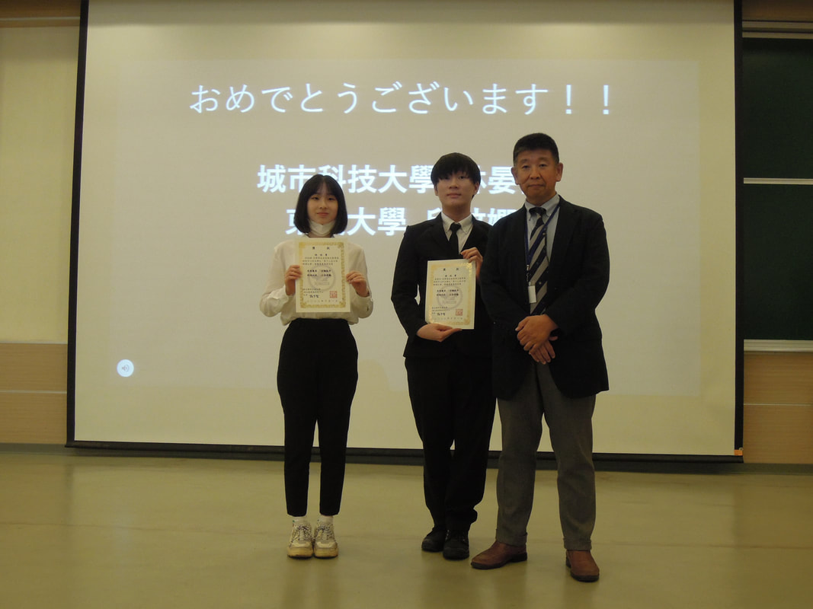
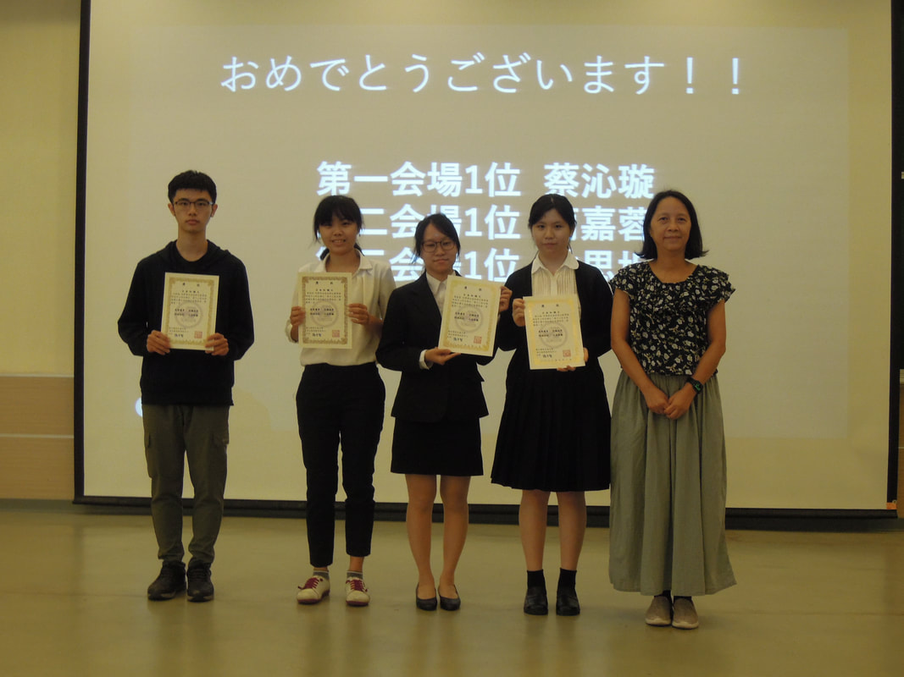

<section class="section" style="border-bottom:none;">
	<div class="container">
		<div class="section-head">
			<span class="eyebrow">Reading Contest 2022</span>
			<h2>2022日本語朗読コンテスト</h2>
			<p>比賽時間：2022.10.01（六）</p>
		</div>

		<h3 class="block-title">獲獎名單</h3>
		<table class="data-table">
			<thead><tr><th>獎項</th><th>得獎人</th></tr></thead>
			<tbody>
				<tr><td>優勝</td><td>彭敬升（南臺科技大學 應用日文系）</td></tr>
				<tr><td>準優勝</td><td>林家綺（陽明交通大學 醫放系）</td></tr>
				<tr><td>第三名</td><td>李品靚（陽明交通大學 電機工程學系）</td></tr>
				<tr><td>佳作</td><td>蔡沁璇（金甌女中應用日文科）<br>朱怡萍（開南大學 應日系）<br>嚴莉（屏東科技大學 餐旅管理系）<br>賴浣玅（政治大學 日文系）<br>陸遙（陽明交通大學 應用數學系）</td></tr>
				<tr><td>審查員特別賞</td><td>吳柏霖（新竹市 陽光國小）<br>黃崑洲（明道大學 材料系）<br>邱紋嫻（東吳大學 日文系）<br>江岱蓉（明道大學 應用外語學系）<br>陳冠吾（東京威力/紀陽工程）<br>林晏任（臺北城市科技大學 應用外語科）<br>蔡佩璇（陽明交通大學 機器人碩士）<br>房天越（陽明交通大學 資訊工程學系）<br>張旭霆（陽明交通大學 工業工程與管理學系）<br>胡聖和（陽明交通大學 機械工程學系）</td></tr>
				<tr><td>日本知識王冠軍</td><td>蔡沁璇（金甌女中應用日文科）<br>簡嘉蓉（臺北城市科技大學 應用外語系）<br>林思圻（陽明交通大學 工業工程與管理學系）<br>王紹倫（陽明交通大學 醫學系）</td></tr>
			</tbody>
		</table>

		<div class="page-prose">
			<p>一年一度讓大家發表日語學習成果的舞台——「日語朗讀比賽」開始報名了。朗讀的好處很多，它可以消除與人交談時的緊張感、增長知識、提升記憶力、豐富情感、維持專注力等等。今年選的題目是日本人都耳熟能詳的文學作品，預賽、決賽題目可隨時更換，現場改念其他題目也可以。</p>
		</div>

		<div class="btn-group" style="justify-content:center;">
			<a class="btn" href="https://forms.gle/kSPNiFwWX9pieGt59" target="_blank" rel="noopener">陽明交通大學學生報名表單</a>
			<a class="btn" href="https://forms.gle/kNS4WAJLhb7aypF47" target="_blank" rel="noopener">校外人士報名表單</a>
		</div>

		<div class="page-prose">
			<h3>比賽資訊</h3>
			<p>報名資格：身分不限！第十三屆日文朗讀比賽開放全國報名，他校學生以及社會人士都可參加（惟注意報名表單不同）。<br>
			報名時間：2022.06.10 ~ 報名額滿。<br>
			報名名額：150 名。<br>
			報到地點：國立交通大學光復校區 綜合一館 B1。</p>
			<p>比賽規則：比賽採預賽與決賽制，各會場初賽成績前 5 名選手進入決賽，共 25 人。初賽題目為四選一，決賽為二選一，請於報名時選擇並登記。</p>
		</div>
		<div class="stat-grid">
			<div><span class="stat-num">30%</span><span class="stat-label">流暢度</span><span class="stat-desc">整體印象、語調</span></div>
			<div><span class="stat-num">30%</span><span class="stat-label">正確性</span><span class="stat-desc">發音、斷句之正確性</span></div>
			<div><span class="stat-num">20%</span><span class="stat-label">表達能力</span><span class="stat-desc">融入情境與否</span></div>
			<div><span class="stat-num">20%</span><span class="stat-label">儀態</span><span class="stat-desc">態度自然與否</span></div>
		</div>
		<div class="page-prose">
			<p>比賽獎項：第一名 1 位、第二名 1 位、第三名 1 位、佳作 5 位、特別賞 10 位。</p>

			<h3>練習時間</h3>
			<p>有老師會在現場指導發音，自由參加。9/14（三）、9/15（四）、9/21（三）、9/22（四）、9/27（二）、9/28（三），18:30-20:20，練習地點：綜合一館 5 樓 509 教室（A509）。</p>
		</div>

		<h3 class="block-title">比賽時間</h3>
		<table class="data-table">
			<thead><tr><th>時間</th><th>事項</th></tr></thead>
			<tbody>
				<tr><td>11:00</td><td>報到（綜合一館地下一樓 AB103 演講廳）</td></tr>
				<tr><td>12:00</td><td>開幕典禮</td></tr>
				<tr><td>12:30</td><td>預賽開始</td></tr>
				<tr><td>14:30</td><td>決賽開始</td></tr>
				<tr><td>15:50</td><td>日本知識王</td></tr>
				<tr><td>17:20</td><td>頒獎～閉幕典禮～團體紀念攝影</td></tr>
				<tr><td>18:00</td><td>結束</td></tr>
			</tbody>
		</table>

		<details class="section-details">
			<summary>分組名單</summary>
			<div class="roster-list">
			<h4>第一會場(AB103)</h4>
			<div class="roster-grid">
				<span>101 吳柏霖</span>
				<span>102 陳思樺</span>
				<span>103 吳俊緯</span>
				<span>104 王思涵</span>
				<span>105 王韻芳</span>
				<span>106 鍾靜文</span>
				<span>107 曾郁茹</span>
				<span>108 李翊瑄</span>
				<span>109 楊舒云</span>
				<span>110 唐儀蓁</span>
				<span>111 許育愛</span>
				<span>112 吳珮彤</span>
				<span>113 陳思侑</span>
				<span>114 劉又瑄</span>
				<span>115 陳思廷</span>
				<span>116 劉傳苓</span>
				<span>117 蔡沁璇</span>
				<span>118 張鏵云</span>
				<span>119 姜欣亞</span>
				<span>120 潘嘉惠</span>
				<span>121 陳兆璿</span>
				<span>122 李品瑩</span>
				<span>123 黃安瑀</span>
				<span>124 顏柏翔</span>
				<span>125 李宇帆</span>
				<span>126 郭彥佐</span>
				<span>127 柯嫚俐</span>
				<span>128 蔡正緯</span>
				<span>129 朱怡萍</span>
				<span>130 賴宥均</span>
				<span>131 彭敬升</span>
				<span>132 嚴莉</span>
				<span>133 林嘉筠</span>
				<span>134 黃子瑄</span>
				<span>135 黃子恬</span>
				<span>136 黃崑洲</span>
			</div>
			<h4>第二會場(AB101)</h4>
			<div class="roster-grid">
				<span>201 蔡雅卉</span>
				<span>202 蔡詠晴</span>
				<span>203 陳予皙</span>
				<span>204 劉香儀</span>
				<span>205 余品毅</span>
				<span>206 林庭伊</span>
				<span>207 周蔚馨</span>
				<span>208 張所婷</span>
				<span>209 詹景雲</span>
				<span>210 邱紋嫻</span>
				<span>211 彭品瑄</span>
				<span>212 童心玫</span>
				<span>213 賴浣玅</span>
				<span>214 陳紀睿</span>
				<span>215 何芷盈</span>
				<span>216 林采霏</span>
				<span>217 劉芸彤</span>
				<span>218 陳冠吾</span>
				<span>219 李祥維</span>
				<span>220 江岱蓉</span>
				<span>221 高金湛</span>
				<span>222 童家儀</span>
				<span>223 潘承佑</span>
				<span>224 張淵博</span>
				<span>225 游芷翎</span>
				<span>226 陳航希</span>
				<span>227 林晏任</span>
				<span>228 游覺輔</span>
				<span>229 陶宛妤</span>
				<span>230 簡嘉蓉</span>
				<span>231 趙于華</span>
				<span>232 張子龍</span>
				<span>233 湯安潔</span>
				<span>234 賴品均</span>
				<span>235 張琬琪</span>
			</div>
			<h4>第三會場(A501)</h4>
			<div class="roster-grid">
				<span>301 管彩芝</span>
				<span>302 林立倫</span>
				<span>303 陳宥嘉</span>
				<span>304 廖冠登</span>
				<span>305 江峻耀</span>
				<span>306 陳奕均</span>
				<span>307 蔡詠翔</span>
				<span>308 黃御銘</span>
				<span>309 江嘉紘</span>
				<span>310 余欣憶</span>
				<span>311 盧聖文</span>
				<span>312 陳宜蓁</span>
				<span>313 簡惟捷</span>
				<span>314 曾偉杰</span>
				<span>315 李嘉泰</span>
				<span>316 王斌</span>
				<span>317 雷其諭</span>
				<span>318 陳重諺</span>
				<span>319 吳紘珺</span>
				<span>320 黃斌</span>
				<span>321 李效賢</span>
				<span>322 蔡佩璇</span>
				<span>323 張博凱</span>
				<span>324 林睿騰</span>
				<span>325 黃媗</span>
				<span>326 吳詩涵</span>
				<span>327 傅莉妮</span>
				<span>328 劉邦福</span>
				<span>329 王坤智</span>
				<span>330 李以恩</span>
				<span>331 黃彥淇</span>
				<span>332 林思圻</span>
				<span>333 林家鴻</span>
				<span>334 關皓瑋</span>
				<span>335 陳禹臻</span>
				<span>336 陳亭宇</span>
				<span>337 陳羽潔</span>
				<span>338 吳傳甯</span>
				<span>339 游建峰</span>
				<span>340 謝昌霖</span>
				<span>341 黃少芃</span>
				<span>342 林玹丞</span>
				<span>343 劉致廷</span>
				<span>344 蔡沛珈</span>
				<span>345 蔡宗達</span>
				<span>346 陳柏旭</span>
				<span>347 翁詩玟</span>
				<span>348 陳炻暄</span>
				<span>349 余采容</span>
			</div>
			<h4>第四會場(A502)</h4>
			<div class="roster-grid">
				<span>401 張凱智</span>
				<span>402 林家綺</span>
				<span>403 陳弘堯</span>
				<span>404 林妤洺</span>
				<span>405 成文瀚</span>
				<span>406 黃芷柔</span>
				<span>407 祝佳怡</span>
				<span>408 蔡耀霆</span>
				<span>409 洪峻德</span>
				<span>410 陸遙</span>
				<span>411 蔡學毅</span>
				<span>412 顏該壽</span>
				<span>413 何嘉婗</span>
				<span>414 王以寧</span>
				<span>415 歐佾宸</span>
				<span>416 黃姵蓉</span>
				<span>417 李冠霆</span>
				<span>418 易正堅</span>
				<span>419 黃翊</span>
				<span>420 王紹倫</span>
				<span>421 曾祺煒</span>
				<span>422 黃荷硯</span>
				<span>423 林揚益</span>
				<span>424 胡聖和</span>
				<span>425 詹詠甯</span>
				<span>426 劉珆睿</span>
				<span>427 房天越</span>
				<span>428 洪義翔</span>
				<span>429 王秉哲</span>
				<span>430 林群凱</span>
				<span>431 陳俞潔</span>
				<span>432 張旭霆</span>
				<span>433 黃婉婷</span>
				<span>434 陳昱宏</span>
				<span>435 陳炻暄</span>
				<span>436 李知器</span>
				<span>437 陳凱昕</span>
				<span>438 蕭幼妤</span>
				<span>439 張畫翎</span>
				<span>440 陳羿茹</span>
				<span>441 陳泓旭</span>
				<span>442 何品穎</span>
				<span>443 李品靚</span>
				<span>444 趙祥智</span>
				<span>445 郭又嘉</span>
				<span>446 楊賀弼</span>
				<span>447 黃怡如</span>
				<span>448 徐沛葳</span>
				<span>449 邵楷唐</span>
			</div>
		</div>
		</details>

		<div class="quote-list">
			<blockquote>
				<strong>ごあいさつ</strong><br><br>
				当校では毎年、日ごろの日本語学習の成果を披露する場として、日本語朗読コンテストを開催しております。今年の予選テーマは日本の歌100選から4篇、決勝テーマは日本を代表する近代文学者の作品2篇を選びました。<br>
				日本語学習者のみなさんの語り、表現力の豊かさにいつも感服しています。今年も素晴らしいパフォーマンスが見られるのを楽しみにしております。<br>
				本校每年都會舉辦日語朗讀比賽，來呈現日常日語學習的成果。今年將從日本歌百選中，挑選四首著名的歌來作為今年朗讀比賽的預賽主題；並選出代表日本現代文學作家的兩部作品作為決賽的主題。歷次日語朗讀者對故事及文章情境的表達，給我留下了深刻的印象。今年也期待看到各位參賽者的出色表現。<br>
				國立陽明交通大學　上條純惠
			</blockquote>
		</div>

		<div class="btn-group" style="justify-content:center;">
			<a class="btn btn-accent" href="assets/docs/reading-contest-2022-preliminary-topic.pdf">予選課題</a>
			<a class="btn btn-accent" href="assets/docs/reading-contest-2022-final-topic.pdf">決勝課題</a>
		</div>
		<div class="page-prose">
			<p style="text-align:center;"><a href="http://www.gavo.t.u-tokyo.ac.jp/ojad/zho/phrasing/index" target="_blank" rel="noopener">韻律朗讀輔導員 鈴木君</a></p>
		</div>

		<div class="gallery">
			<a class="gallery-item" href="assets/img/uploads/2_orig.jpg"></a>
			<a class="gallery-item" href="assets/img/uploads/dscn9807_orig.jpg"></a>
			<a class="gallery-item" href="assets/img/uploads/dsc01556_orig.jpg"></a>
			<a class="gallery-item" href="assets/img/uploads/dscn9805_orig.jpg"></a>
			<a class="gallery-item" href="assets/img/uploads/dscn9804_orig.jpg"></a>
			<a class="gallery-item" href="assets/img/uploads/dscn9800_orig.jpg"></a>
			<a class="gallery-item" href="assets/img/uploads/dscn9791_orig.jpg"></a>
		</div>
	</div>
</section>
